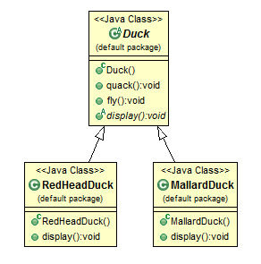
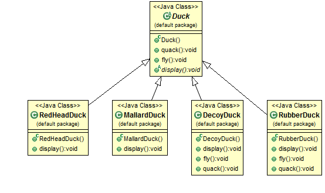
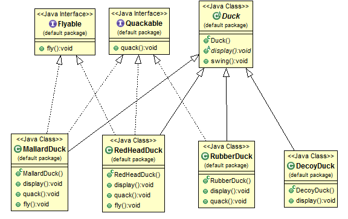
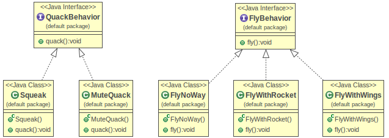
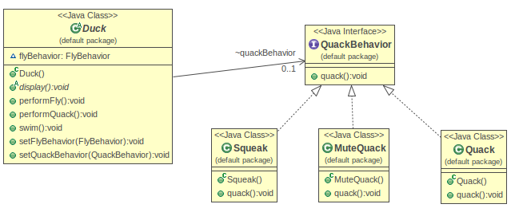
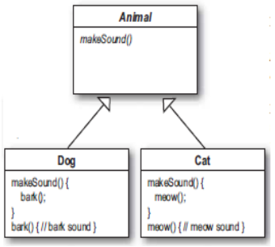
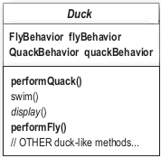
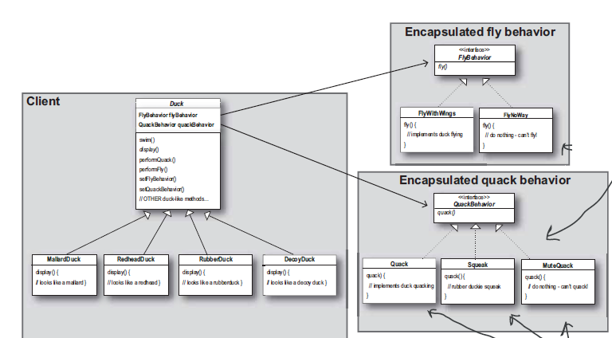
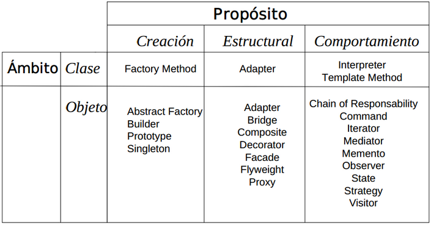

Simulador de patos
Comenzamos con un simple simulador de patos que tiene varias especias qua nadan y hacen quack.
Vemos como queda el diseño incial

Duck abtracto que tiene las implementaciones de quack y swing, pero display estara implementada por cada subclase.
Características del diseño
- El codigo de implementacion de quack, swing y fly no esta duplicado
- Principio de mantenimiento
- Principio de reutilización
Si ahora queremos que los patos ademas vuelen?
- Agregamos el metodo en la clase padre y listo
Nuevas especificaciones
Si ahora queremos un pato de goma?
- Creamos una clase RubberDuck que herede de Duck y tenemos un pato que vuela hacer quack y nada
Pero acá viene el problema: Como hereda de Duck puede volar, cosa que no deberia y además hace quicki en vez de quack
Qué solución le podemos encotra a esto?
Posible solución
Una posible solución es sobreescribo el metodo fly() y el metodo quack() en la clase RubberDuck
Y si quiero hacer un pato de madera que no hace ni quack, ni vuela?
- Podría sobreescrbir los 2 métodos, pero ya los principios de reutilización y facilidad de manetenimieto se perderían.
Y si agregamos otra clase pato de decoración, que no vuela, ni hace quack, me pasa lo mismo

Características del diseño
Cuales son desventajas o limitaciones del uso de herencia de la implementación actual?
- El código se duplica en las subclases
- Es dificil cambiar el comportamiento en tiempo de ejecución
- Es dificil predecir el comportamiento de todos los patos sin mirar la implementación
- Los cambios pueden afectar a otros patos sin tener la intención de hacerlo
Otra posible solución
Otra posible solución es el uso de interfaces
- Hacemos dos interfaces flyable y quackable y cada pata las implementa de acuerdo a si va a volar o quackear o no

Implementación usando interfaces
Se puede ver como el código esta duplicado y si quisieramos hacer un cambio en quack para que dijera otra cosa habria que hacerlo en todas las clases que tiene el código repetido
Simulador de patos
Que ventajas y desventajas tiene el uso de intefaces?
- Solucionamos el tema de que no todas los patos o vuelan a hacen quack, con esto lo elegimos cuando creamos la clase, se soluciona el problema del compartamiento inesperados y que un cambio afecte al resto
- Desaparece el concepto de reuso de codigo y aparece duplicacion de codigo con todo el problema de mantenimiento que esto acarrea
- En java no se puede heredar de mas de una clase semiabracta (con implemntaciones) y las interfaces no tiene implementacion de codigo.
- Segimos teniendo el problema de que no se puede cambiar la estrategia en tiempo de ejecución.
Constante del desarrollo de software
Una cosa que es constante en el desarrollo de software es el cambio. No importa lo bueno que sea el diseño las aplicaciones tiene que ir cambiando para adaptarse a los nuevos requierimientos
El diseño original andaba hasta que aparecio un pato que no volaba y tuvimos que empezar a buscar una forma de incorporar el cambio y se nos complicó
- El primer diseño basado en herencia no fuenciono ya que los comportamiento cambianban en las distintas sublcases, lo que hizo que no se rehutilizara el codigo de la superclase
- El segundo diseño no tiene mucho sentido ya que el codigo se tiene que implementar en las subclase y repetir en las que tienen el mismo comportamiento, habiendo asi codigo duplicacdo y complicando el matenimiento.
En un leguaje con herencia multiple este diseño podria haber sido efectivo
Principio de diseño
Identificar los aspectos de la aplicacion que varian y separarlos de los que permanecen.
Siempre tenemos aspectos o comportamientos de la aplicacion que son propensos a los cambios con los nuevos requerimiéntos, lo que tenemos que hacer es identificar estos y separarlos de los aspectos que no cambian
Separamos las partes que cambian
Sabemos que fly() y quack() son las partes que varian entre las distintas especies de patos
Sacamos estos métodos de la clase Duck y vamos a crear 2 conjuntos de clases que representa los comportamientos de volar y de hacer quack
Comportamiento de Quacks (QuackBehavior)
- No hace nada
- Hace quack
- Hace quick (pato de goma)
Comportamiento de vuelo (FlyBehavior)
- Vuela solo
- Vuela en grupo
- No vuela
En primer lugar vamos a mantener las cosas flexibles y asi poder asignarles comportamientos a los patos sin tener que implementar todo el codigo cada vez.
En segundo lugar vamos a hacer que se pueda cambiar el comportamiento en tiempo de ejecucion. Un pato que no vuela podria empezar a volar, o viceversa. (Seters de comportaminto, SetBehavior)
Inicialmente el comportamiento venia de la implementacion superclase abstracta Duck, o de la implementación específica de la subclase (esto cuando sobreescrbimos el método para cambiar el comportamiento). En ambos casos estamos dependiendo de una implementación específica, y no hay manera de cambiarla sin escribir codigo nuevo.
Separamos las partes que cambian
En el nuevo diseño no van a ser las clases de Duck las que van a implementar las interfaces de volar o hacer quack, sino que va a ser un grupo de clases cuyo único objetivo es representar un comportamiento QuackBehavior o FlyBehavior

Todas las clases que implementen alguna estrategia de vuelo tiene tienen que implementar el metodo fly().
Las clases FlyWithWings, FlyWithRochet, FlyNoWay son los que tiene la implementacion concreta de fly()
Con este diseño otros objetos puede usar los comportamintos ya que el codigo no esta mas escondido dentro de las clases de patos
Separamos las partes que cambian
Esto en contraste con lo que haciamos antes donde el comportamiento venia de la implementación concreta de la superclase abstracta Duck, o de la implementación específica de la subclase (esto cuando sobreescrbimos el método para cambiar el comportamiento). En ambos casos estamos dependiendo de una implementación específica, y no hay manera de cambiarla sin escribir codigo nuevo.
Con el nuevo diseño las subclases de Duck van tener el comportamiento referenciando a un objeto que implementa una interfaz (QuackBehavior y FlyBehavior), con lo que la implementación del comportamiento va a estar implementado por una clase que implemente esa interfaz
O sea el código va a estar en la clase concreta que sea del tipo (implements) de esa interfaz (podria haber sido una clase abtracta)

Principio de diseño
Programar a interfaces, no a implementaciones
Programar a una interface no significa usar interfaces sino programar a un supertipo, ya sea interface o clase abstracta
Si tenemos un diagrama de clases asi:
}

Programar a la implementacion sería
Programar a una interface/supertipo sería:
Sabemos que es un perro pero usamos el animal como referencia polimorfica
Asignamos la implementacion concreta en tiempo de ejecuciín
Armando la aplicación
Agregamos dos variables de instancia a la clase Duck()

FlyBehavior y QuackBehavior estan delcaradas como interfaces
- performQuack() remplaza a quack()
- performFly() remplaza a fly()
Armando la aplicación
La superclase abstracta Duck
- En ves de manejar el comportamiento Quack o Fly delega el comportamiento al objeto referenciado por el parametro quackBeahavior (en tiempo de ejecucion).
- Si bien quackBehavior esta declarado como interfaz en tiempo de ejecucion va a ser un objeto concreto de tipo FlyWithWings o FlyNoWay (clases concretas), que tiene la implementacion y tienen SI O SI el metodo fly()
Armando la aplicación
La sublcase concreta MallardDuck
Seteamos las varibles de instancia flyBehavior y quackBehavior;
Recordemos que las varibles flyBehavior y quackBehavior estan declaradas en la clase padre Duck
Armando la aplicación
La interfaces QuackBehavior
Una de las implementaciones de QuackBehavior
Corremos un prueba del proyecto
Salida por cosola
Seteamos el comportamiento dinámicamente
Agregando setters de comportamiento a la clase Duck vamos a poder cambiar el comportamiento dinámicamente
Ahora vamos a poder hace esto
Salida por cosola
Diagrama de clases completo

Principio de diseño
"Tener un" puede ser mejor que "ser un"
Favorecer la composicion sobre la herencia
En el ejemplo en ves de heredar el comportamiento, los patos obtien el comportamineto por medio del uso de la composición
El uso de la composición sobre la herencia, da mayor flexibilidad y no solo permite encapsular en familias los distintos comportamientos sino que ademas permite hacer cambios de comportamiento en tiempos de ejecución.
Patrón de diseño Strategy
El patrón Strategy permite mantener un conjunto de algoritmos de los que el objeto cliente puede elegir aquel que le conviene e intercambiarlo según sus necesidades.
- Clasificación: Se clasifica como patrón de comportamiento porque determina como se debe realizar el intercambio de mensajes entre diferentes objetos para resolver una tarea.
Se usa para cambiar
- Motivación:
- Incluir el codigo de las clases clientes hacen que sean demasiado pesados y dificiles de mantener
- El ciente no va a necesitar todos los algoritmos entodos los casos.
- Si hay distintos clientes que usen los mismo algoritmos se debe repetir el codigo.
- Se puede cambiar de algoritmo en tiempo de ejecución.
- Aplicabilidad
- Cualquier programa que ofrezca un servicio o función determinada, que pueda ser realizada de varias maneras, es candidato a utilizar el patrón estrategia. Si muchas clases relacionadas se diferencian únicamente por su comportamiento, se crea una superclase que almacene el comportamiento común y que hará de interfaz hacia las clases concretas.
- Si un algoritmo utiliza información que no deberían conocer los clientes, la utilización del patrón estrategia evita la exposición de dichas estructuras.
- Si se necesita cambiar dinámicamente de comportamiento
- Algoritmos que comparten la misma interface
Patrón de diseño Strategy
- Consecuencias:
- Beneficio: Gerarquias de estrategias que definen una familia de algoritmos, se usa la herencia para agrupar las distintas familias de algoritmos
- Beneficio: da una alternativa mas reusable y dinamica a las subclases mientras que no cambien las interfaces
- Beneficio: Las estrategias pueden tener distintas implementaciones y el cliente puede optar por la mas conveninete
- Desventaja: Los clientes deben conocer las distintas estrategias para poder seleccionar las mas apropiada
- Desventaja: aumenta el número de objetos creados, por lo que se produce una penalización en la comunicación entre estrategia y contexto
- Participantes
- Contexto (Context) : Es el elemento que usa los algoritmos, por tanto, delega en la jerarquía de estrategias. Configura una estrategia concreta mediante una referencia a la estrategia necesaria. Puede definir una interfaz que permita a la estrategia el acceso a sus datos en caso de que fuese necesario el intercambio de información entre el contexto y la estrategia. En caso de no definir dicha interfaz, el contexto podría pasarse a sí mismo a la estrategia como parámetro.
- Estrategia (Strategy): Declara una interfaz común para todos los algoritmos soportados. Esta interfaz será usada por el contexto para invocar a la estrategia concreta.
- EstrategiaConcreta (ConcreteStrategy): Implementa el algoritmo utilizando la interfaz definida por la estrategia.
Patrón de diseño Strategy
- Estructura:

Organización de los patrones
- Crecionales
- Clase: Los patrones creacionales de Clases usan la herencia como un mecanismo para lograr la instanciación de la Clase.
- Objeto: Los patrones creacionales de objetos son más escalables y dinámicos comparados de los patrones creacionales de Clases.
- Estructurales
- Clase: Los patrones estructurales de Clases usan la herencia para proporcionar interfaces más útiles combinando la funcionalidad de múltiples Clases.
- Objeto:Los patrones estructurales de objetos crean objetos complejos agregando objetos individuales para construir grandes estructuras. La composición de l patrón estructural del objeto puede ser cambiado en tiempo de ejecución, el cual nos da flexibilidad adicional sobre los patrones estructurales de Clases.
- Comportamiento
- Clase: Los patrones de comportamiento de Clases usan la herencia para distribuir el comportamiento entre Clases.
- Objeto:Los patrones de comportamiento de objetos nos permite analizar los patrones de comunicación entre objetos interconectados, como objetos incluidos en un objeto complejo.
Organización de los patrones

Referencias
Head First Design Patterns
http://es.wikipedia.org/wiki/Strategy_(patr%C3%B3n_de_dise%C3%B1o)
http://www.ciberaula.com/articulo/diseno_patrones_j2ee
←
→
/
#